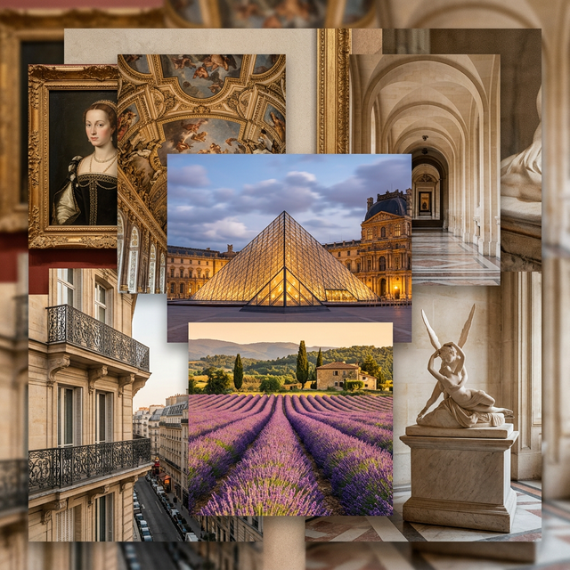

✦ L'Art de Vivre
Art, cuisine, festivals, and the timeless spirit of France
The Essence of France
French culture is a magnificent tapestry woven from centuries of artistic brilliance, culinary mastery, philosophical thought, and an unwavering dedication to beauty. From the Gothic cathedrals that pierce the heavens to the humble boulangeries that perfume every street, France has gifted the world with an art of living — l'art de vivre — that continues to inspire and delight.
French cuisine is recognized by UNESCO as an Intangible Cultural Heritage of Humanity. It's a celebration of terroir, technique, and passion.
France celebrates life with spectacular festivals that bring communities together and attract visitors from around the globe.
France has been the epicenter of artistic revolution — from Impressionism to Existentialism, the nation continues to shape creative thought worldwide.
From Roman antiquity to cutting-edge modernism, French architecture represents a continuous dialogue between beauty and innovation.
Gastronomic Heritage
French gastronomy is far more than food — it's a way of life. Every region brings its own distinctive flavors, born from centuries of tradition and the finest local ingredients. The French meal itself is a ritual: an aperitif to begin, carefully paired courses, fine wine, and always room for cheese before dessert.
From the rustic cassoulet of Toulouse to the delicate seafood platters of Brittany, from the aromatic herbs of Provence to the hearty charcuterie of Alsace, each bite tells a story of place, people, and passion.
The French Spirit
The values that define France and inspire the world
Freedom of expression lies at the heart of French identity — from revolutionary ideals to artistic liberty, France champions the freedom to think, create, and dream.
Equality before the law and in society remains a founding principle. The Declaration of the Rights of Man and of the Citizen (1789) continues to shape modern democracy.
Brotherhood and solidarity bind French communities together. From neighborhood marchés to national celebrations, the spirit of togetherness runs deep.